Projects
What the SEAR Lab (Sustainable and Efficient Allocation of Resources) is working on at UT Arlington, from critical-mineral supply chains to the lab's own microgrid.
Sponsored projects
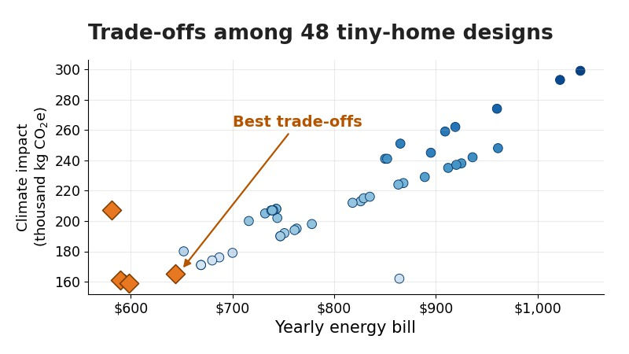
Education, Outreach and WorkforceResearch Experiences for Teachers: Green Building
The SEAR Lab's project in UTA's NSF RET Site: K-12 teachers evaluate green building designs and carry that research into their classrooms.
Completed · 2021–2025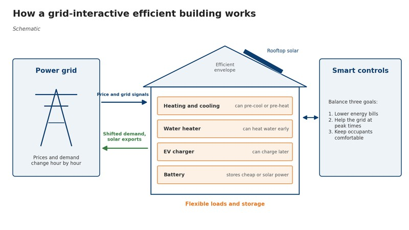
Green Building and Energy EfficiencyGrid-Interactive Efficient Buildings (NREL)
Summer 2024 work with the National Renewable Energy Laboratory on how homes can cut energy costs and support the grid.
Completed · 2024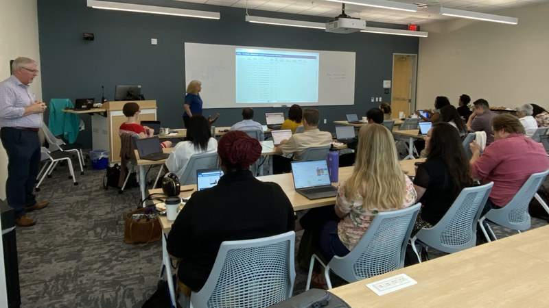
Education, Outreach and WorkforceEngineering for One Planet at UTA
A Lemelson Foundation–funded program helping UTA faculty in any discipline weave sustainability into the courses they already teach.
Completed · 2024–2026
Current projects
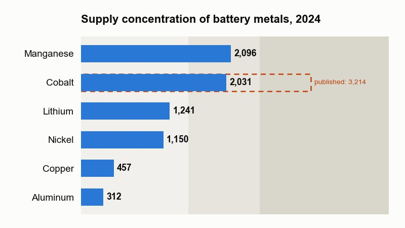
Critical Minerals and Supply ChainsCritical Mineral Flows
How climate and trade policy shape battery-metal supply chains: who mines and processes the metals, and where they flow.
Active · 2024–present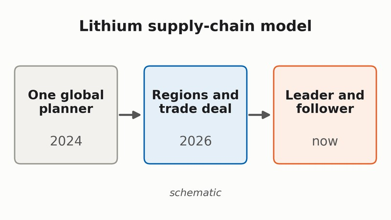
Critical Minerals and Supply ChainsLithium Supply Chain Model
An optimization model of the lithium supply chain, from mine to battery pack, now extended to regions, trade deals and competing players.
Active · 2024–present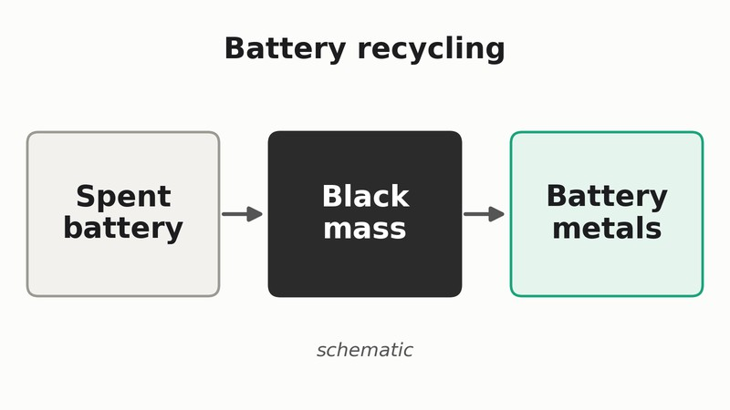
Critical Minerals and Supply ChainsBattery Recycling and Black Mass
Making lithium-ion battery recycling cheaper and more local, from grinding old cells into black mass to recovering the metals.
Active · 2024–present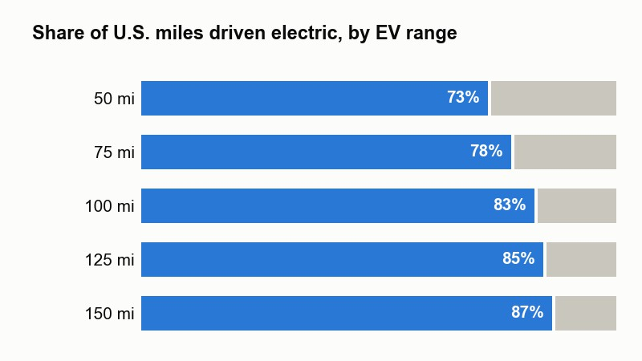
Energy Systems and Grid AnalyticsExtended-Range Electric Vehicles
How much U.S. driving an electric car with a backup gas generator could do on battery, and what range is enough.
Published · 2024–2025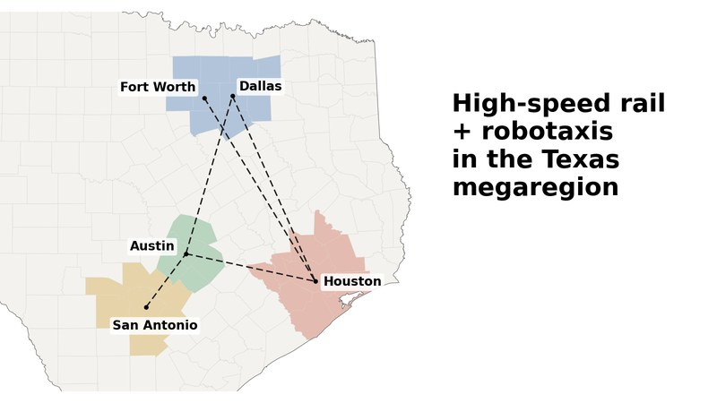
Transportation and MobilityHigh-Speed Rail and Robotaxis for the Texas Megaregion
What if a Texas high-speed rail line were paired with electric robotaxis to carry travelers from door to door?
Manuscript in revision · 2026–present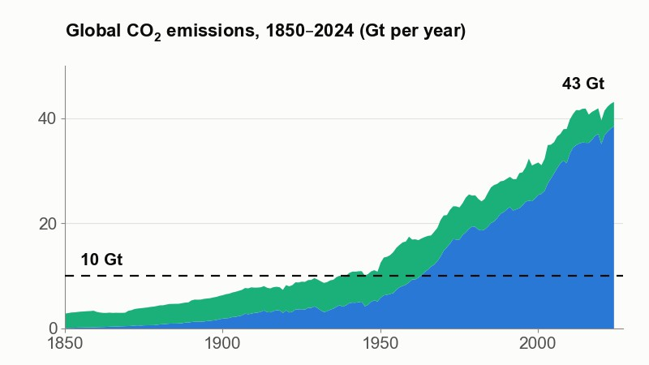
Critical Minerals and Supply ChainsFrom 40 to 10 Gigatons: Global Carbon Flow
Can the world cut carbon dioxide emissions from about 40 to 10 billion tonnes a year, and would the air respond?
Manuscript in preparation · 2026–present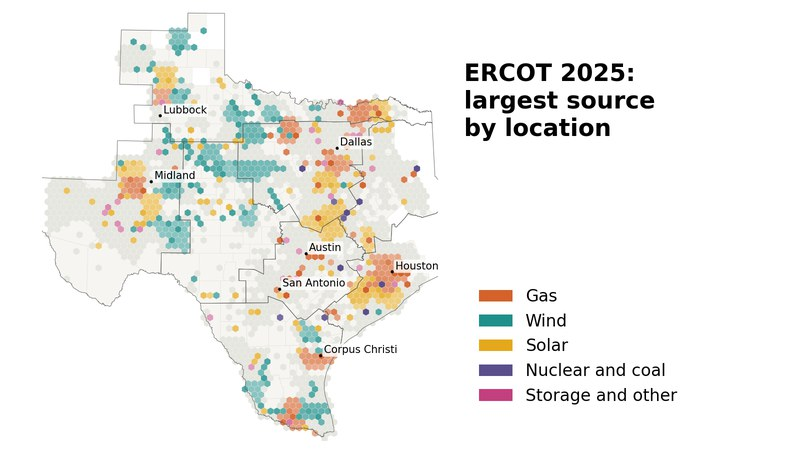
Energy Systems and Grid AnalyticsTexas Grid Dashboard
How location and time of day shape which Texas power plants run, what electricity costs, and where batteries would help most.
Active · 2023–present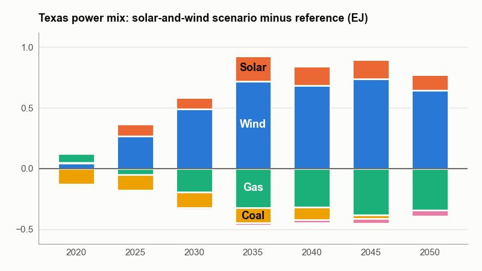
Energy Systems and Grid AnalyticsEnergy Systems
How Texas's changing power grid ripples through the rest of the energy system, from factories and cars to electricity prices.
Active · 2020–present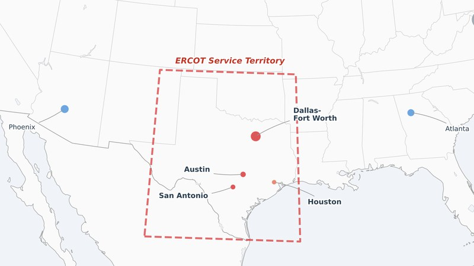
Energy Systems and Grid AnalyticsAI Data Center Energy
How AI data centers can get power sooner and more reliably by building their own generation and batteries while staying on the grid.
Active · 2025–present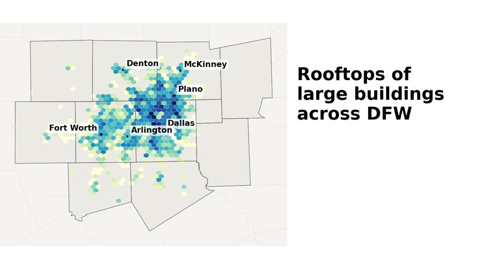
Geospatial and Infrastructure AnalysisBuilding Asset Mapping: Rooftop Solar Across DFW
Could solar panels on the roofs of large private buildings supply Dallas–Fort Worth's growing electricity demand right where it is used?
Manuscript in preparation · 2026–present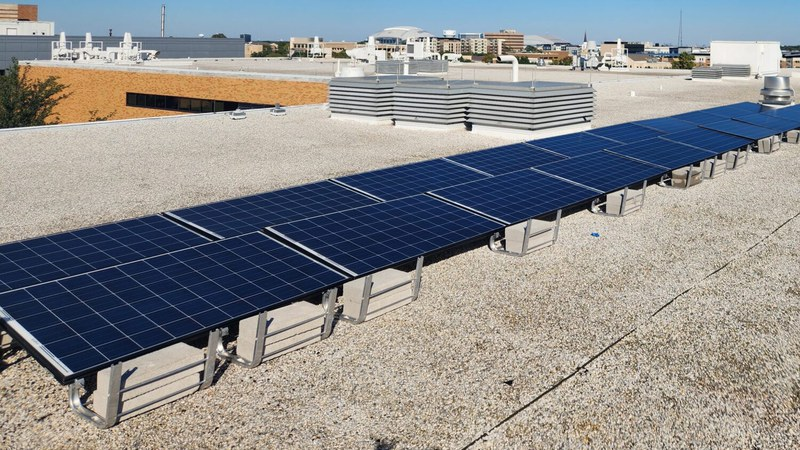
Lab Energy SystemLab Energy System: Production, Use and Control
The SEAR Lab turns its own rooftop solar, electricity use and weather into a live dataset that students collect, analyze and learn to control.
Active · 2023–present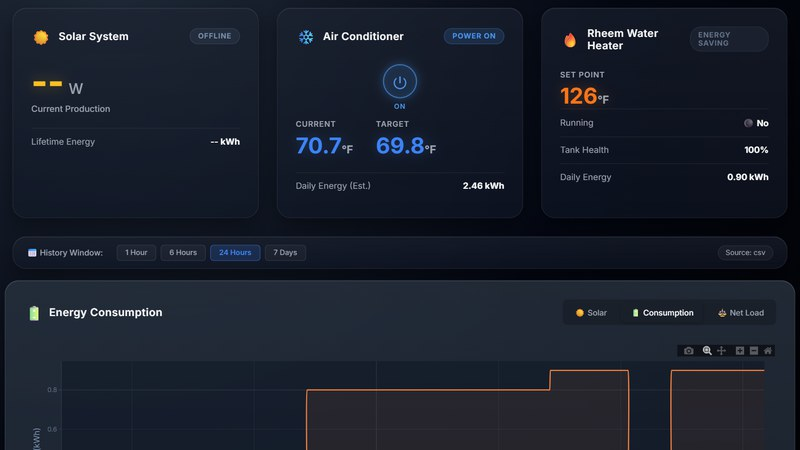
Lab Energy SystemHot-Water Heater and HVAC Data
Students connect the lab's water heater and air conditioner to software, so the lab can see, and eventually steer, how much energy they use.
Active · 2026–present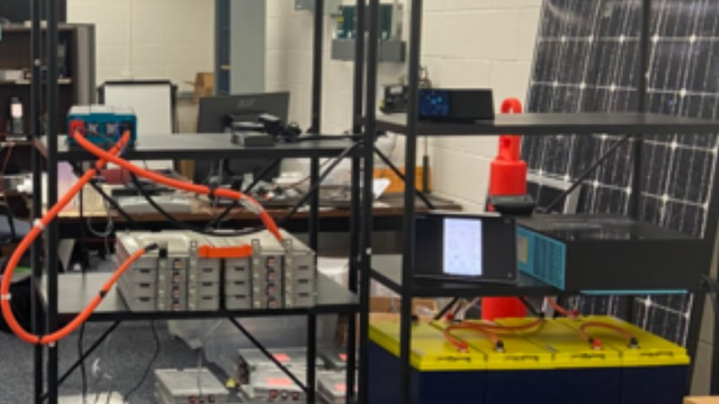
Microgrids and Second-Life BatteriesMicrogrids and Second-Life Batteries
A bench-scale solar microgrid assembled from repurposed Nissan Leaf battery modules, now being recommissioned so new students can continue the work.
Recommissioning · 2022–present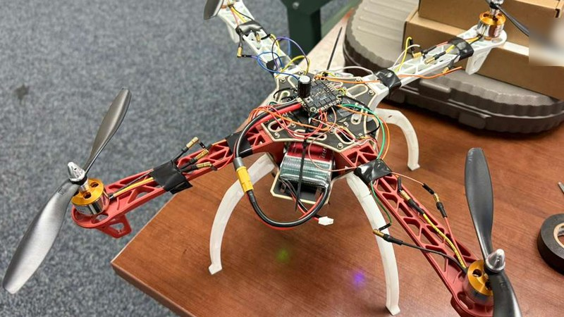
Manufacturing, Robotics and AutomationDrone Manufacturing
Students build and flight-test a small quadcopter from off-the-shelf parts and document each step so the next team can pick it up.
Active · 2026–present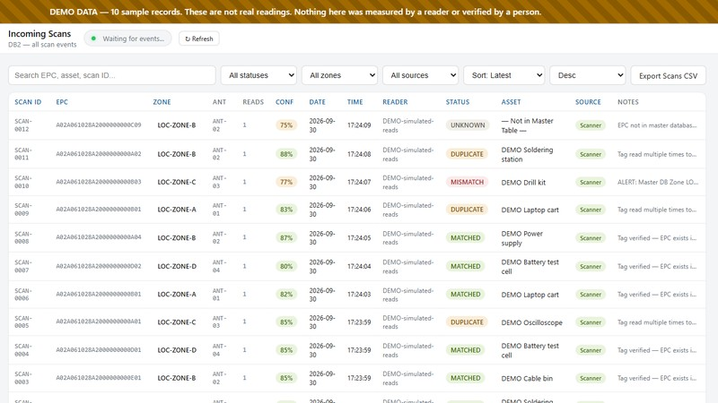
RFID, Auto-ID and Digital TwinsRFID for Lab and Supply-Chain Tracking
Turning radio-tag reads into records people can act on, tested first on the lab's own equipment and on naloxone-kit tracking.
Active · 2024–present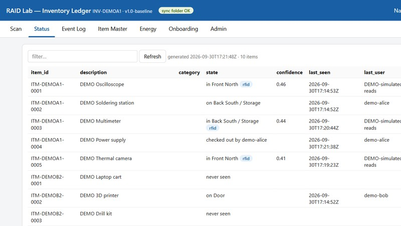
RFID, Auto-ID and Digital TwinsLab Inventory Control Database
Students are building the lab's own system for tracking equipment and supplies, from shelf labels and barcode scans to where each item is now.
Active · 2025–present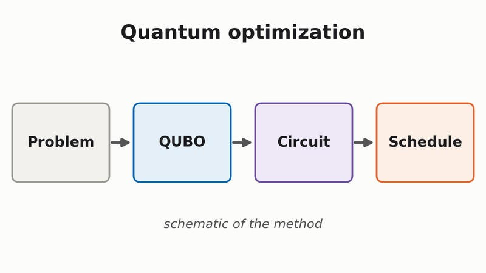
AI and Computational MethodsQuantum Optimization
Exploring how planning problems can be rewritten so quantum computers can work on them, starting with a small scheduling example.
Active · 2025–present
Completed projects
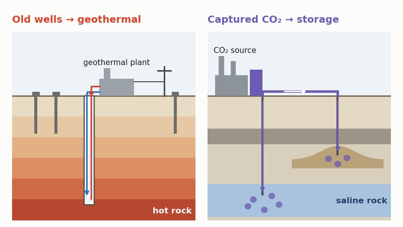
Energy Systems and Grid AnalyticsAlternative Energy Solutions
Giving oil and gas infrastructure a second life: orphaned wells as geothermal plants, and depleted reservoirs and saline rock as carbon dioxide stores.
Completed · 2020–2025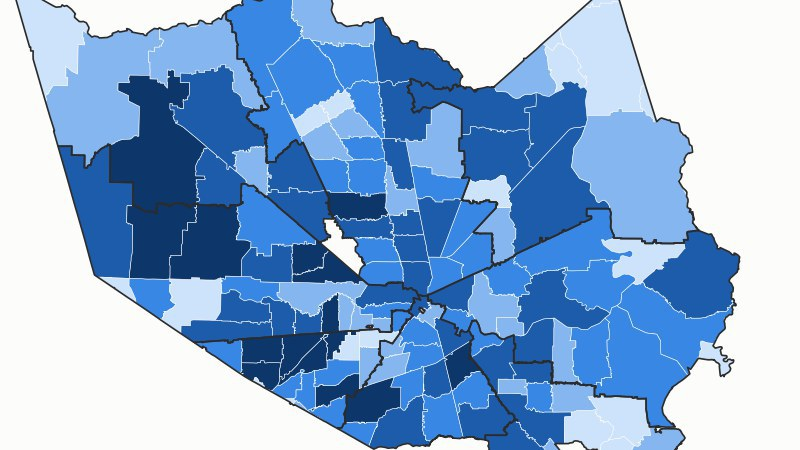
Community and Policy AnalyticsCOVID-19 Last-Mile Distribution
Planning how scarce COVID-19 treatments and vaccines could reach Houston's most vulnerable neighborhoods first.
Completed · 2020–2021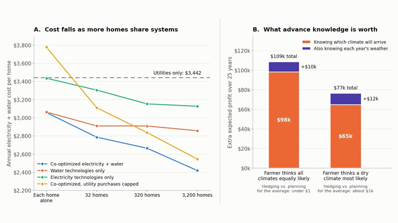
Food, Energy and WaterFood, Energy and Water Systems
Planning electricity and water together, for homes and farms, so that local solar, rainwater and desalination pay off.
Completed · 2021–2022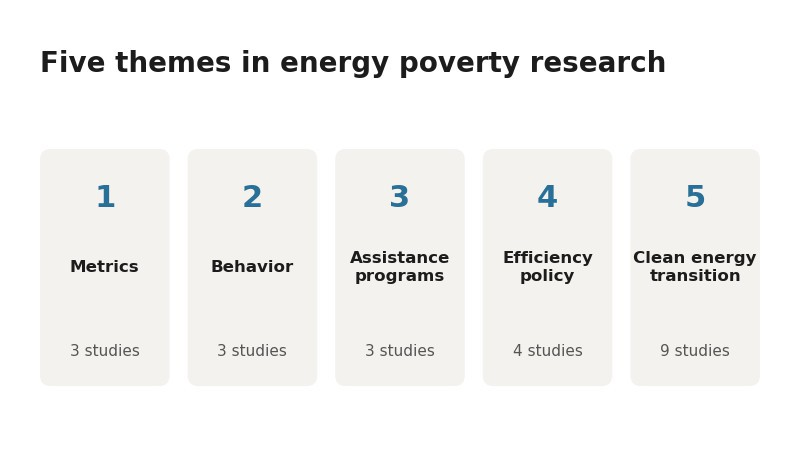
Community and Policy AnalyticsEnergy Poverty and Energy Justice
Who goes without affordable energy, how to measure it, and what the research says about the programs meant to help.
Completed · 2020–2023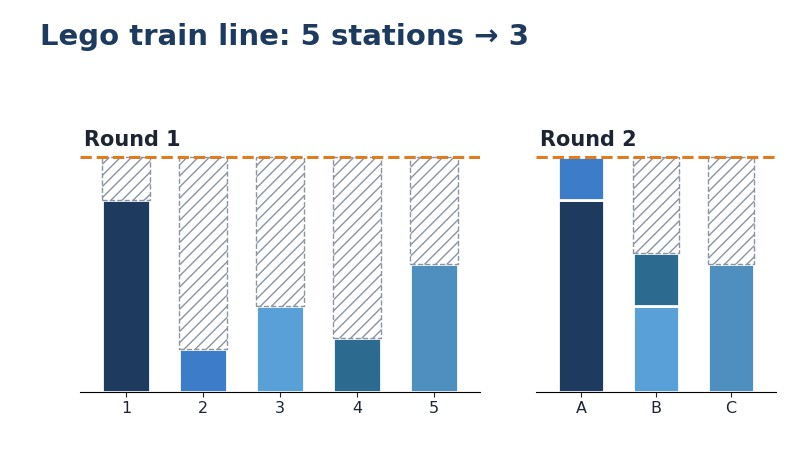
Manufacturing, Robotics and AutomationLean Manufacturing Lego Demo
Students build a Lego train on a classroom assembly line, measure what goes wrong, fix it with lean tools and build again.
Completed · 2024–2025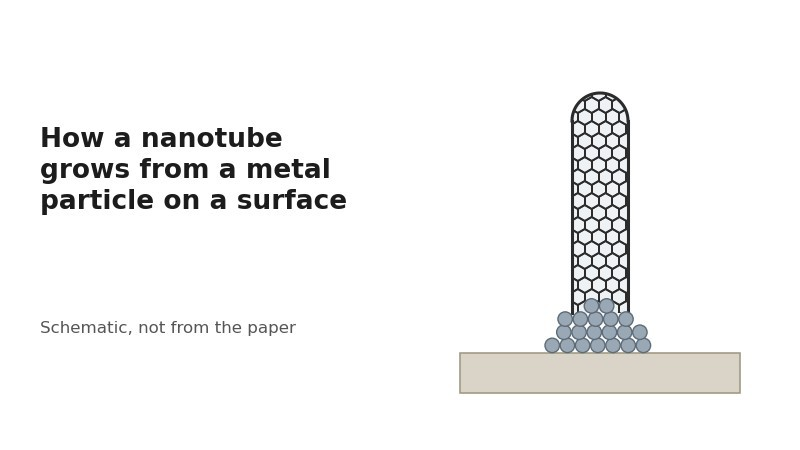
MaterialsCarbon Nanotube Growth
Computer simulations of how single-walled carbon nanotubes grow on metal catalyst particles, and where flaws in their walls come from.
Completed · 2011–2014
No project matches that search.